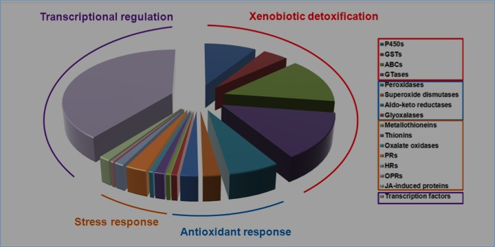
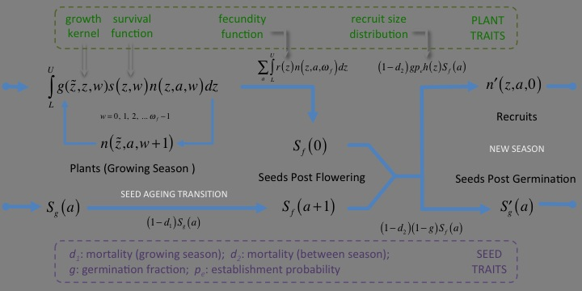

BBSRC-HGCA Black-grass Resistance Initiative
Understanding herbicide resistance from the molecular to the farm scale

Core Project

Work Package 1: Molecular mechanisms underpinning the evolution of MHR in black-grass (2014-2018)
Who is involved? Rob Edwards (PI) and Paul Neve (CI)

Work Package 2: Black-grass population monitoring and resistance audit (2014-2018)
Who is involved? Rob Freckleton (PI), Paul Neve (CI) and Rob Edwards (CI)
Work Package 3: Genetic architecture and inheritance of MHR (2014-2018)
Who is involved? Paul Neve (PI), Dylan Childs (CI), Rob Freckleton (CI), Jarrod Hadfield (CI) and Rob Edwards (CI)

Work Package 4: Eco-evolutionary modelling of black-grass populations (2015-2018)
Who is involved? Dylan Childs (PI), Rob Freckleton (CI), Paul Neve (CI) and Jarrod Hadfield (CI)
Work Package 5: Asessing wider impacts of resistance and management (2016-2018)
Who is involved? Ken Norris (PI), Rob Freckleton (CI) and Dylan Childs (CI)
- PI: Primary Investigators
- CI: Co-Investigators
- PP: Project Partners
- PD: Post Doctoral Research Associates
Associated Research
Other projects can go here...